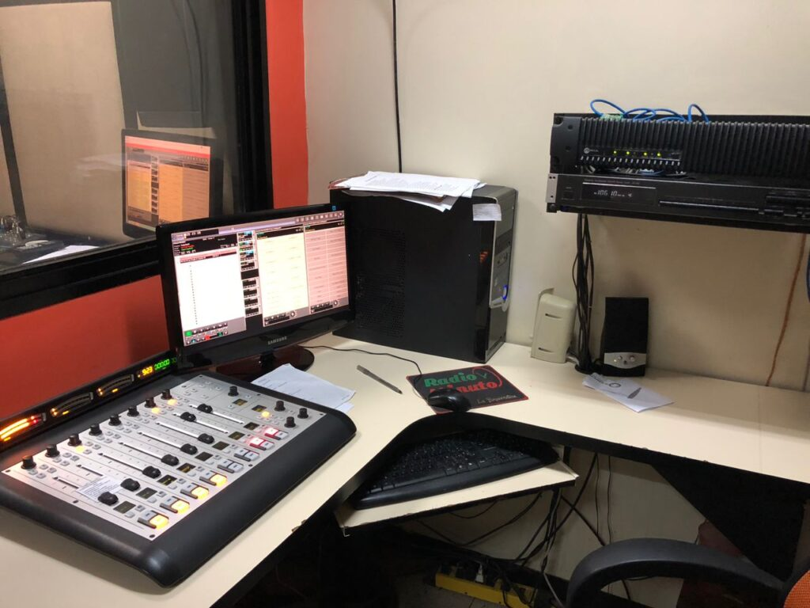
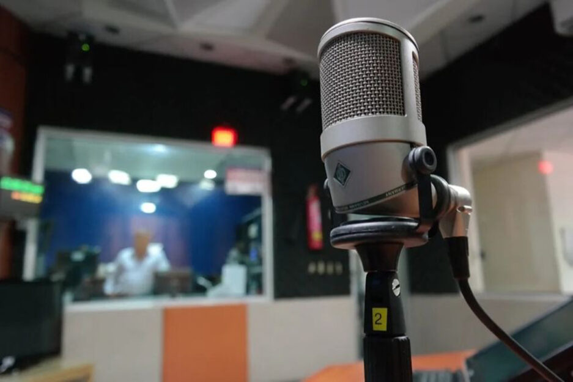

Las emisoras en frecuencia modulada hacen debut en Lara en 1989 con Okey 101.5 FM. Las expectativas en el terreno noticioso eran inmensas, pero no hubo ningún cambio, pues en las mismas se limitaron a la utilización del formato corto y otra jerarquización de las informaciones como darle preferencia a las noticias económicas, internacionales y culturales.
